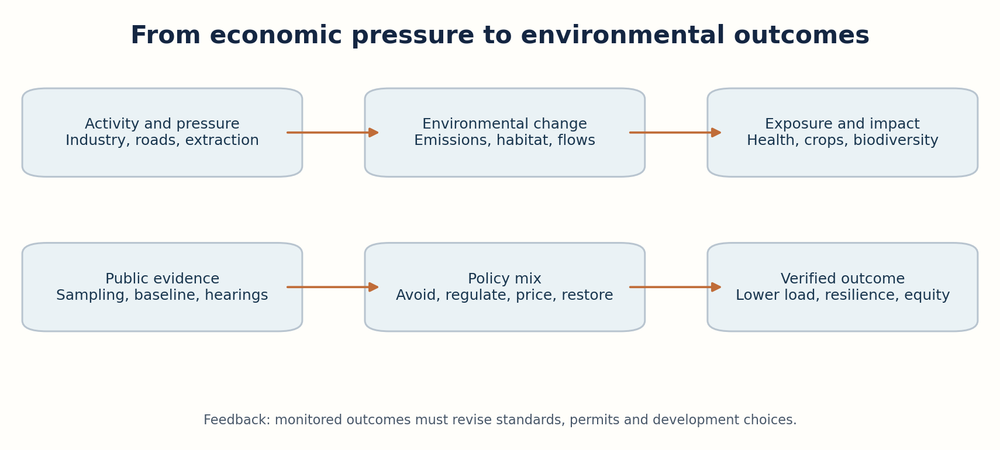
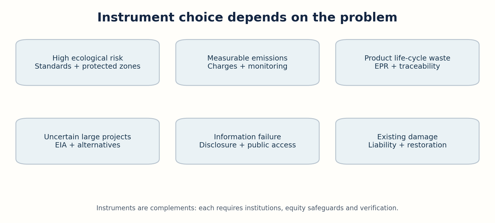
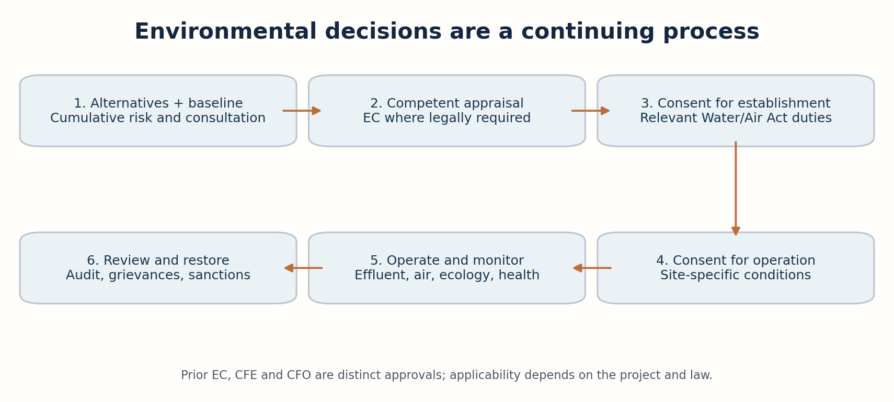
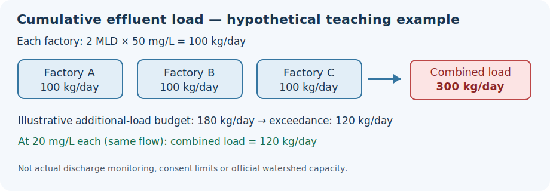

Cycle45 integrated PDF · Editable Markdown master · Preserved original PDF ·
Environment vs Development: Definition of Environment; Environmentalism; Environmental Protection Policy; Environmental Policy Instruments
Production status: Expanded original study draft, dated 24 October 2026. Not independently academically approved. Official PYQ provenance is separately reported; practice questions are original.
The published Group I Paper IV Unit III Topic 1 wording is: “Environment vs Development: Definition of Environment, Environmentalism; Environmental Protection Policy, Environmental Policy Instruments.” This chapter follows that wording. The official notification and subsequent amendments should be rechecked before an examination; the original notification's complete annexures have not been independently audited line by line.
| Syllabus element | Detailed coverage | Examine through |
|---|---|---|
| Definition of environment | §§1–3 | Components, ecological functions, legal definition, feedback |
| Environment versus development | §§4–6 | Externalities, sustainability, equity, trade-offs, appraisal |
| Environmentalism | §§7–8 | Intellectual history, ethics, movements, participation |
| Environmental protection policy | §§9–12 | Constitution, NEP 2006, laws, EIA, institutions |
| Environmental policy instruments | §§13–17 | Command-control, economic, information, rights, governance |
| Telangana applications | §§4, 8, 11, 15–17 | TGPCB, industrial consent, Musi, urban forests, waste |
The environment is a connected system of land, air, water, living organisms, people and their interactions. Development changes that system, but it also depends on its ecological services. Pollution and ecosystem loss are often economic externalities: private decision-makers do not bear the full social cost. Environmentalism arose as scientific understanding, public movements and ethical arguments challenged the assumption that higher output alone represents progress. India's policy framework joins constitutional duties, sectoral laws, impact assessment, regulatory institutions and instruments ranging from emission standards to economic incentives and public disclosure. Telangana makes the issues concrete: industrial corridors need jobs and wastewater safeguards; Hyderabad needs mobility and clean air; Musi restoration requires upstream source control, drainage and accountable public participation; dryland districts need resilient watersheds. Good policy is not the choice of 'growth' or 'nature' in isolation. It is a transparent, legally defensible choice of alternatives that protects health, livelihoods, ecological thresholds and future generations, while distributing benefits and burdens fairly.
Begin with the standalone revision, study the seventeen concept chapters, inspect the three original diagrams and the instrument comparison, then answer the thirty original MCQs. Write six mains answers under the question-specific blueprints. Dates in the current-affairs register are part of the facts; policy targets are not measured outcomes. All source URLs are collected at the end for verification, not inserted as distracting source page numbers.
Environment (legal and scientific). Section 2(a) of the Environment (Protection) Act, 1986 includes water, air, land and their interrelationships with human beings, other living creatures, plants, microorganisms and property. Ecology studies relationships between organisms and surroundings; an ecosystem comprises interacting biotic and abiotic components. Ecosystem services are provisioning, regulating, cultural and supporting functions, though categories overlap in practice.
Environment-development relationship. Economic activity uses natural inputs, land and sinks for waste. When a firm discharges untreated effluent, its accounts omit health, farming and downstream treatment costs. This is a negative externality. Environmental policy attempts to internalise such costs, prevent irreversible losses and ensure minimum rights. Distinguish growth (output), development (human capabilities and distribution), sustainability (intergenerational ecological viability) and greenwashing (unsupported claims).
Sustainability concepts. Brundtland Report (1987): present needs without undermining future generations' ability to meet theirs. Weak sustainability permits some substitution between natural and manufactured capital; strong sustainability protects critical natural capital that cannot readily be replaced. Precaution addresses uncertain but potentially serious harm; prevention addresses reasonably known harm. Polluter-pays allocates costs, but does not grant permission to destroy an irreplaceable ecosystem.
Environmentalism. Conservation (wise use), preservation (protecting areas/species from exploitation), environmental justice (unequal exposure and participation), ecological modernisation (technology and institutions), deep ecology (intrinsic ecological value), and livelihood-based environmentalism (forests, water and commons) differ in moral emphasis. Indian examples include Chipko and the Silent Valley campaign; do not confuse a protest movement with a binding statute.
Constitutional anchors. Article 48A: state shall endeavour to protect/improve environment and safeguard forests and wildlife. Article 51A(g): citizen's fundamental duty to protect/improve natural environment. Article 21 has been judicially interpreted to include a healthy environment. Article 253 enables Parliament to implement international obligations. Article 48A is a Directive Principle, not itself an individually enforceable fundamental right.
Main Indian laws. Water Act 1974; Air Act 1981; Environment (Protection) Act 1986 (umbrella powers); Wildlife (Protection) Act 1972; Biological Diversity Act 2002 as amended; National Green Tribunal Act 2010; forest conservation framework under the 1980 statute as amended. Verify current subordinate rules and amendments; legal names and commencement dates matter.
EIA sequence. Screening where applicable → scoping/terms of reference → baseline and alternatives → impact prediction → public consultation where required → expert appraisal → decision with conditions → compliance monitoring. EIA Notification 2006 remains a central reference with amendments; a 2020 draft was a draft, not automatically a final replacement. A pollution-board CFE/CFO is not the same instrument as prior environmental clearance.
Instruments. Standards and permits set enforceable boundaries; taxes/charges change prices; tradable credits set accounting incentives; subsidy/green procurement accelerate cleaner alternatives; public disclosure changes reputation and monitoring; EPR assigns producer responsibility for end-of-life products; liability and restoration seek to repair damage. Each fails without credible measurement, enforcement and fairness.
Telangana institutions. Telangana Pollution Control Board (TGPCB) implements relevant Water/Air Act consent and other rules; CFE is generally before establishment, CFO before operation. Telangana's environment department, forest department, biodiversity institutions, urban local bodies and EPTRI perform different functions. A state industrial single window does not waive environmental compliance.
Current, dated facts. Solid Waste Management Rules 2026 were notified 27 January 2026 and commenced 1 April 2026, replacing the 2016 general SWM rules (with savings for prior actions). India's April 2026 NDC for 2031–35 targets 47% lower GDP emissions intensity than 2005, about 60% non-fossil installed electric capacity and a 3.5–4.0 billion-tonne CO2e forest/tree carbon sink by 2035. These are targets, not achieved 2026 values; do not mistake installed capacity for electricity generated.
Mains evaluation frame. Define the conflict → identify the affected ecological service and vulnerable groups → cite law/institution → compare at least two alternatives → choose a combination of enforceable standards, transparent participation and cost-effective incentives → propose measurable monitoring → conclude with intergenerational equity. The best answer avoids both 'all industry is harmful' and 'environmental clearance is a formality'.
In everyday language the environment is what surrounds a person, organism or community. Scientific analysis is more demanding: it asks how air, water, soil, organisms and human activities interact through flows of energy, matter and information. The lithosphere supplies minerals and soils, the hydrosphere carries water and dissolved substances, the atmosphere transports heat and pollutants, and the biosphere connects organisms with all three. These are not sealed compartments. A pollutant deposited on land may dissolve in runoff, enter a stream, accumulate in fish and ultimately affect human health. The same interconnectedness makes a watershed a more useful unit for managing many problems than an arbitrary administrative boundary.
Section 2(a) of India's Environment (Protection) Act, 1986 gives a broad legal meaning: water, air and land and their interrelationships with human beings, other living creatures, plants, microorganisms and property. The inclusion of interrelationships is important. An environmental injury is not confined to a visible patch of smoke or a dead fish; it may concern an entire chain of exposure and ecological effects. Property in the definition does not mean that only property owners enjoy environmental protection. Constitutional and statutory duties operate alongside this definition and extend to public health and ecological integrity.
Distinguish habitat (the place in which a species lives), ecosystem (interacting living and non-living elements), biome (a broad ecological region), ecology (study of relationships), and environmental quality (condition relative to ecological or health criteria). Urban Hyderabad is an environment as surely as a forest: buildings, roads, drainage, air currents, lakes, trees, workers and informal settlements form one coupled system. A city's temperature and flood exposure depend partly on land-cover change, wetland storage and storm-water design, not simply on annual rainfall.
The analytical boundary must fit the question. A factory's compliance may be assessed at an outfall, a river's health at catchment scale, and climate change at global scale. If assessment stops at a property line, downstream or cumulative effects disappear from the record. This is why environmental governance needs both local measurements and regional planning. The common examination error is to define environment as only 'nature untouched by people'. That definition cannot explain urban pollution, environmental health or development policy.
Ecosystems depend on solar energy, photosynthesis, food webs, nutrient cycles, decomposition and hydrological movement. Energy flows through trophic levels and is lost as heat; nutrients such as nitrogen and phosphorus circulate through soil, organisms, water and air. An agricultural field, urban lake or dry deciduous forest is a system of stocks and flows. Groundwater stored in an aquifer is a stock; recharge and pumping are flows. If extraction persistently exceeds replenishment, the stock declines even when each year's water supply appears adequate. A forest's standing trees are not identical to the services supplied by soil, microbial communities, pollinators and canopy structure.
Ecosystem services connect ecology to human welfare. Provisioning services include food, water and biomass; regulating services include flood attenuation, water purification, climate moderation and pollination; cultural services include recreation and spiritual meaning; supporting processes such as soil formation sustain other functions. The categories help analysis but should not be added as if they were independent monetary outputs. For example, counting both nutrient cycling and the crop production it enables can double-count benefits in valuation exercises.
Ecological thresholds are levels beyond which a system may change state, sometimes abruptly. A lake receiving nutrients may tolerate a load for years and then shift to frequent algal blooms and oxygen depletion. A degraded catchment may experience faster runoff and erosion. Resilience is the ability to absorb disturbance and retain key functions; it is not simply the speed of returning to a previous condition. Recovery may be slow or impossible if seed sources, soil structure or hydrological connections are lost. This explains why a cost-benefit calculation should not assume every natural loss can be replaced by paying for plantation elsewhere.
Telangana's dryland tanks illustrate these interactions. Desilting can increase storage in a suitable tank, but benefits depend on catchment inflow, encroachment control, maintenance and water allocation. A new concrete embankment does not automatically restore fish habitat or downstream flows. In urban lakes, inflow of untreated sewage may overwhelm beautification measures. An examination answer should trace pressure → ecological mechanism → affected service → human consequence → management response. That causal chain is more valuable than a list of ecosystem names.
Environmental degradation is a decline in ecological condition or service capacity. Pollution is a subset involving introduction of substances or energy at harmful levels. Air pollutants can be primary (emitted directly, such as particulate matter) or secondary (formed through atmospheric chemistry, such as ground-level ozone). Water pollution can be point-source (an identifiable discharge) or diffuse (runoff carrying fertiliser and sediment). Soil contamination, excessive noise, heat and light also create environmental burdens. Each has a distinct exposure route, persistence and regulatory approach.
A useful risk framework separates hazard, exposure and vulnerability. A hazardous chemical may pose limited population risk when securely contained; a lower-toxicity contaminant can create serious harm when exposure is widespread or chronic. Children, elderly persons, outdoor workers and low-income communities may experience disproportionate impacts. For water, upstream discharge and downstream drinking-water intake create spatial inequality. For air, emissions cross municipal boundaries; a neighbourhood's measured concentration is influenced by transport, weather and multiple sources, not only the nearest facility.
Cumulative impact arises when individually modest projects together overload a shared ecological system. Ten facilities each satisfying an isolated discharge condition may still stress a river if assimilative capacity is low. Road widening, real-estate filling and drain obstruction can combine to worsen urban flooding. Assessments should therefore consider baseline conditions, reasonably foreseeable developments, seasonal variability and the no-project alternative. Merely showing that each project meets a generic design standard is not proof that the catchment or airshed can absorb the total burden.
Management follows a hierarchy: avoid a harmful location or activity; minimise unavoidable emissions; restore damage; and only then consider compensation or offsets under applicable law. Monitoring must measure outcomes, not only installed equipment. A treatment plant that exists on paper but is bypassed does not reduce pollution. Credible environmental data need calibrated instruments, sampling protocols, public access and independent checks. The policy challenge is to combine source control with land-use planning, enforcement and incentives that reward prevention rather than cleanup after harm occurs.
Development expands human capabilities through health, education, security, infrastructure, employment and political participation. GDP growth can finance these goals but is not their synonym. Economic production draws materials and energy from nature and returns wastes. The environment, in turn, supplies clean water, disease regulation, fertile soils and climate stability that make production possible. The relationship is therefore both enabling and constraining. The false binary says every environmental rule destroys jobs or every development project destroys nature. The real challenge is choosing among technologies, locations, designs and distributional arrangements.
Consider an industrial estate near Hyderabad. It may create jobs, supplier markets and tax revenue. It can also increase groundwater demand, truck emissions and effluent loads. A serious appraisal compares a site with reliable common effluent treatment and public transport against a site that would drain a wetland. It evaluates actual jobs and wages rather than announced investment, and actual emissions and water availability rather than promised zero impact. A project can be socially worthwhile yet require redesign, relocation, compensation or stricter controls. Equally, a poorly designed project may impose costs larger than its benefits even when its private financial return is high.
Economic analysis identifies opportunity cost and externality. If a polluting unit pays only for its raw materials and electricity, its price omits respiratory illness, crop loss and water treatment borne by others. A standard, charge or liability rule can move those costs into the producer's decision. But monetary valuation has limits: sacred sites, species extinction, community displacement and irreversible aquifer damage cannot be reduced to a reliable market price. Public decisions need ecological minimums and procedural rights as well as efficiency calculations.
Distribution matters. The urban consumer who benefits from cheap electricity may be different from the rural family that bears mining or reservoir impacts. Women may lose access to common fuel and water even when formal land compensation is paid to titled owners. A defensible development strategy requires transparent alternatives, meaningful consultation, rehabilitation, long-term monitoring and accessible grievance mechanisms. The relevant mains conclusion is not 'balance both' as a slogan; it is state the conditions under which a project should proceed, change or be rejected.
The 1987 Brundtland Commission framed sustainable development around meeting present needs without compromising future generations' ability to meet theirs. The principle has two linked concerns: poverty reduction today and ecological capacity tomorrow. An environmentally pristine policy that ignores hunger is inadequate; so is a high-growth policy that leaves depleted aquifers and toxic waste to future citizens. Sustainable development is a decision criterion, not a guarantee that every activity labelled 'green' is beneficial.
Weak sustainability treats different forms of capital—natural, physical and human—as partly substitutable. A mine might be justified if revenues fund education and other productive assets. Strong sustainability argues that certain ecological assets are critical and not substitutable at reasonable cost: biodiversity, a stable climate, aquifer integrity and irreplaceable habitats. The disagreement is practical. Can a plantation of fast-growing trees replace an old natural forest's species, soil and water functions? Can engineered drains replace a floodplain? In many cases the answer is only partial. Policy therefore combines investment in substitutes with safeguards for critical natural capital.
The precautionary principle guides action where plausible serious or irreversible harm exists but scientific certainty is incomplete. It does not require prohibiting every innovation; it shifts attention to evidence quality, burden of justification, safer alternatives and adaptive safeguards. Prevention is different: when the hazard and causal pathway are already well established, action need not wait for more research. Polluter-pays makes the polluter bear prevention and remediation costs. It must not be misunderstood as a purchased licence to inflict irreversible harm. The public-trust idea treats certain common resources as held for the public rather than disposable for narrow private gain.
Telangana's irrigation, mining and urban development choices show intergenerational issues. Groundwater pumped today may support immediate income while reducing tomorrow's drought buffer. Afforestation targets can increase tree counts while failing to protect native habitats if species selection and survival are poor. A robust sustainability audit uses water balances, ecological baselines, land-use change, health indicators and maintenance costs over the full project life. It also asks whose future counts: metropolitan residents, downstream farmers, tribal communities and children not yet born.
Clean air is difficult to exclude people from and is often consumed jointly, creating public-good features. Fisheries, groundwater and grazing commons may be rival in use yet hard to exclude users from; over-extraction can result when rights and collective rules are weak. The 'tragedy of the commons' is not a universal claim that communities inevitably fail. Well-governed common-property institutions can set access rules, monitor use and sanction violations. Problems often arise when customary institutions are weakened without an effective replacement.
A negative externality occurs when a producer's action harms others without payment; a positive externality occurs when benefits spill over, as with some restoration and knowledge investments. The economic response depends on measurability and institutions. An emission tax can be efficient when damage per unit can be approximated and monitored; a strict standard may be preferable for highly toxic substances or ecological thresholds. Tradable permits can equalise marginal abatement costs if the cap, allocation and monitoring are credible. Bargaining is unlikely to solve severe pollution when thousands of affected people face unequal information and legal power.
Environmental valuation includes avoided-damage cost, replacement-cost proxies, revealed preferences and stated-preference surveys. These are tools, not objective prices for all ecological functions. Replacement cost may overstate value if the replacement is not actually demanded, or understate it if it fails to restore biodiversity. Discounting future benefits makes distant harms appear smaller; the discount rate is therefore an ethical as well as technical choice. Sensitivity analysis should show how conclusions change with discount rate, health assumptions, uncertainty and ecological thresholds.
Government can also fail. A subsidy for groundwater pumping may increase depletion; a poorly targeted clean-technology subsidy may reward firms that would have invested anyway. Regulatory capture, weak inspection, unreliable data and fragmented agencies undermine both command-and-control and market instruments. A good policy evaluation asks about additionality (would the improvement happen anyway?), leakage (does harm move elsewhere?), permanence, transaction costs, compliance and distribution. Environmental economics supports judgment; it cannot replace law, public participation or ecological science.
Environmentalism is a family of ethical, political and social efforts to protect environmental quality and reconsider humanity's relationship with nature. It is not the same as ecology, which is a scientific field, nor the same as environmental law, which comprises binding rules. Modern environmentalism was shaped by industrial pollution, resource extraction, urban public health, conservation science and mass movements. Rachel Carson's Silent Spring (1962) drew attention to pesticide risks; the 1972 Stockholm Conference helped place the environment on international agendas; the 1992 Rio Earth Summit linked environment with development and public participation.
Different schools disagree about what deserves protection and why. Conservationism supports prudent use of resources across time; preservationism gives greater weight to keeping some habitats free from intensive exploitation. Anthropocentrism values nature primarily through human interests, while biocentrism and ecocentrism attribute moral significance to living organisms or ecological wholes. Deep ecology questions human dominance and high-consumption lifestyles. Ecological modernisation sees cleaner technology, standards and institutions as ways to decouple growth from damage. Environmental justice focuses on who bears hazards, who receives benefits and who has a voice.
These are not mutually exclusive boxes. A community may defend a forest for livelihoods, biodiversity, cultural identity and carbon storage simultaneously. Environmental movements can improve accountability by revealing local knowledge that expert reports miss. Yet activism can also confront trade-offs: a restriction on forest use may protect habitat while harming landless households if rights and alternative incomes are ignored. Similarly, rapid renewable-energy deployment can reduce emissions but still affect grazing land or habitats if siting is careless. An academically sound answer presents the strongest competing arguments rather than treating one label as inherently correct.
In India, the Chipko movement is associated with community resistance to commercial logging in the Himalayan region, while the Silent Valley campaign focused on ecological consequences of a proposed hydroelectric project in Kerala. These are illustrations of different movement strategies, not interchangeable historical episodes. In Telangana, environmentalism includes community attention to lake protection, forest rights, industrial effluents and urban tree cover. Students should ask whether a movement changed a policy, a project's design, public information or enforcement; protest itself is not proof of final ecological recovery.
Participation is valuable because environmental costs are spatially concentrated and expert models cannot capture every local livelihood or seasonal pattern. Fishers may know where a lake receives polluted inflows; women collecting water may identify a failing handpump before administrative reports; farmers may identify changes in tank silt and irrigation timing. Meaningful participation requires understandable information, reasonable notice, accessible venues, protection against retaliation and a response to substantive objections. A public hearing conducted after key decisions are effectively irreversible is weaker than participation at the alternatives stage.
Environmental justice has three dimensions. Distributional justice asks who suffers pollution and displacement; procedural justice asks who can participate and appeal; recognitional justice asks whether customary rights, language, gender and cultural attachments are acknowledged. A rehabilitation package paid only to formal landholders may miss tenants, wage labourers and users of commons. For Scheduled Areas, forest and land rights require careful application of the relevant statutory framework; generic corporate social responsibility cannot substitute for lawful consent, rights recognition or compensation.
Hyderabad's Musi river demonstrates why participation must be linked to causal diagnosis. Riverfront beautification alone cannot solve upstream sewage loads, industrial discharges, storm-water misconnection and solid-waste dumping. River restoration should specify water-quality baselines, interception and treatment, ecological flows where feasible, floodplain safety, settlement impacts and operating budgets. Claims of complete cleanup require measured outcomes over time, not merely construction progress. The same principle applies to urban lakes where fencing and walkways are visible but dissolved oxygen and inflow quality remain poor.
Telangana's Haritha Haram and urban forest park programmes show the role of public mobilisation in increasing green cover. Government forest sources describe a programme of urban forest parks, but planting targets and numbers of saplings cannot be equated with surviving native forest, biodiversity or cooling benefits. Evaluation should measure survival, species diversity, canopy growth, access and long-term protection. Community oversight can improve results when it complements technical ecological planning rather than substituting for it. In mains, link public participation to measurable governance changes: published data, grievance redress, independent sampling and responsive redesign.
Environmental protection policy is the organised set of objectives, laws, institutions, public spending and behavioural incentives used to prevent environmental harm and restore ecological functions. It differs from a single statute. A statute may authorise regulation; a national policy articulates principles; subordinate rules specify operational duties; permits apply requirements to a facility; budgets fund monitoring and restoration. Confusing these layers leads to inaccurate claims such as treating a policy target as a legally enforceable emission limit.
A coherent policy cycle starts with problem identification: what pollutant, resource or ecosystem is at risk, where and for whom? It then establishes a baseline, compares feasible options, selects a mix of instruments, assigns responsibilities and budgets, implements monitoring and evaluates results. For example, reducing particulate pollution may require transport planning, industrial stack standards, dust control, cleaner fuels and reliable monitoring. A single ban announced without capacity or alternatives may shift activity into informal channels. Good design anticipates evasion, administrative costs and unequal burdens.
India's National Environment Policy, 2006 places conservation, livelihood security, equity and integration of environmental concerns into development decisions within a common framework. Its principles are broad policy guidance; enforceable obligations arise through applicable statutes, rules, notifications, court orders and permits. Environmental policy also intersects with health, energy, transport, agriculture, urban planning and industrial policy. Interdepartmental coordination is necessary because a pollution board cannot, by itself, fix land-use zoning or municipal sewage treatment.
Policy evaluation should distinguish inputs (money spent, inspectors hired), outputs (permits processed, treatment capacity built), outcomes (measured pollutant concentrations, disease exposure, ecosystem recovery) and distribution (which communities benefited). A policy may meet its spending target while missing its environmental outcome. Sunset clauses, periodic standards review and public dashboards can support correction, but only when data quality is independently checked. Telangana's mix of industrial growth, dryland vulnerability and metropolitan pollution makes integration especially important: a policy that is sound for one river basin or district may need adaptation elsewhere.
India's constitutional environmental framework combines state duties, citizen duties and judicially interpreted rights. Article 48A directs the State to endeavour to protect and improve the environment and safeguard forests and wildlife. Article 51A(g) imposes a fundamental duty on citizens to protect and improve the natural environment, including forests, lakes, rivers and wildlife, and to have compassion for living creatures. The Supreme Court has interpreted Article 21's protection of life to encompass aspects of a healthy environment. Directive Principles and Fundamental Duties guide governance and interpretation, but their legal status is not identical to an enforceable fundamental right.
The Water (Prevention and Control of Pollution) Act, 1974 established a framework for central and state pollution control boards and consent regulation of water discharges. The Air (Prevention and Control of Pollution) Act, 1981 extends regulatory control to air pollution and specified industrial operations. The Environment (Protection) Act, 1986 gives the Union broad powers to set standards and issue subordinate rules for environmental protection. The Wildlife (Protection) Act, 1972, the biological diversity framework and forest conservation law address different resource and habitat questions. These laws overlap in some projects, but one clearance does not replace every other required permission.
The National Green Tribunal Act, 2010 created a specialised adjudicatory forum for covered environmental civil disputes and relief. NGT jurisdiction and limitation rules depend on the statutory schedule and claim; it is not a universal substitute for all courts or criminal proceedings. Judicial doctrines such as precautionary principle, polluter-pays and public trust have influenced environmental decisions, but their application is fact-sensitive. A sound answer should identify the legal source of a duty, the responsible authority, the affected right and the available remedy rather than citing slogans without procedure.
Legal compliance is dynamic. Amendments, exemptions, revised categories and court orders can change a facility's obligations. For example, solid-waste management rules notified in January 2026 commenced in April 2026; older notes that state the 2016 general rules remain the sole operative framework are outdated. Conversely, the draft EIA Notification 2020 should not be called a fully operative replacement merely because it was published for consultation. Students must distinguish enactment, notification, commencement, amendment, draft and policy announcement.
The Ministry of Environment, Forest and Climate Change (MoEFCC) coordinates national environmental policy and administers key central legislation. The Central Pollution Control Board (CPCB) provides technical coordination, standards-related functions and national pollution information under applicable law. State pollution control boards perform local regulatory tasks, including consent and inspection. Forest departments, biodiversity boards, urban local bodies, irrigation agencies, disaster authorities and specialised research institutions have separate mandates. A fragmented responsibility map can produce gaps even when each agency has formal powers.
Telangana Pollution Control Board (TGPCB) was constituted following state reorganisation in July 2014 under the relevant Water and Air Act provisions. The Board's consent for establishment (CFE) ordinarily concerns setting up a regulated unit; consent for operation (CFO) concerns operating it subject to conditions. The Telangana industrial single-window portal handles applications, but processing convenience does not eliminate statutory environmental standards. Industry categorisation by pollution potential can support risk-based regulation, while site-specific ecological sensitivity still matters. A 'green category' label is not proof that a project has no impacts in a vulnerable location.
The Environment Protection Training and Research Institute (EPTRI) in Hyderabad provides training, applied research and technical support. Telangana's forest department and CAMPA structure are concerned with forests and compensatory-afforestation funds under the applicable central framework; urban local bodies must address sewage, drainage and solid waste. When a river is polluted, responsibility may span industry regulators, sewerage utilities, municipalities and upstream land users. An effective plan identifies the lead agency, joint milestones, funding, data-sharing rules and an accountable authority for unresolved interagency disputes.
Regulatory performance must be judged by environmental outcomes, not merely the speed of approvals. Inspectors need laboratories, data systems and legal support; firms need predictable rules; citizens need accessible complaint channels. Continuous monitoring can identify spikes but may suffer from calibration failures or selective placement. Independent sample checks and public reporting help maintain trust. In an answer on cooperative federalism, explain that the Union sets many legal frameworks while state boards and local institutions implement them in geographically specific contexts. Telangana's policy success depends on coordination between these levels.
Environmental Impact Assessment (EIA) anticipates significant project effects before irreversible decisions are made. Under India's EIA Notification 2006 and its amendments, specified project categories require prior environmental clearance from the competent authority, with appraisal arrangements varying by category. Typical stages include screening where applicable, scoping or terms of reference, baseline studies, impact prediction, public consultation where required, expert appraisal, a reasoned decision and post-clearance compliance. The exact applicability of stages depends on the notified schedule and amendments; no single procedural description fits every project.
A baseline is not merely one afternoon's air sample. It should reflect relevant seasons, receptors, existing pollution, water balances, land use, biodiversity and local livelihoods. Impact prediction estimates construction, operation, accident and closure risks. Alternatives analysis compares sites, technology, scale, routing and the no-project scenario. Mitigation must be tied to measurable conditions, responsible persons, budgets and monitoring frequency. Public consultation helps test assumptions and expose distributional effects, but it is not equivalent to an automatic veto or a substitute for statutory rights.
Cumulative impact is crucial for industrial clusters, multiple dams, mining belts and rapidly expanding urban corridors. A single project's study may miss the combined burden on an aquifer or river. Strategic Environmental Assessment (SEA) applies similar reasoning earlier to policies, plans or programmes; it is a planning approach rather than a universal substitute for legally required project EIA. Environmental clearance and pollution-board consent are distinct: one assesses broader project impacts and conditions, while consent regulates emissions or discharges under specific statutes. Both may be required, along with forest or wildlife permissions where applicable.
Weak EIAs may use poor baselines, copy text from unrelated locations, understate impacts or fail to monitor compliance. The remedy is not simply more paperwork. It is competent independent assessment, transparent data, accessible consultation, alternatives that can actually be chosen and enforceable conditions. In Telangana, a proposed industrial park near a tank system should evaluate wastewater treatment, storm-water pathways, water demand, traffic and downstream users. A decision that ignores the tank's catchment is incomplete even if the project's plot appears legally available.
Command-and-control regulation prescribes legal duties: emission or effluent limits, technology or process requirements, land-use restrictions, product standards, permits and prohibitions. A performance standard states the maximum permissible pollution; a technology standard prescribes a method or equipment. Performance standards can allow firms flexibility to innovate, but require credible measurement. Technology standards are easier to verify in some settings yet may lock in outdated equipment. A ban can be appropriate for an exceptionally hazardous substance, but poorly enforced bans may create illicit markets or substitution with equally harmful alternatives.
Consent conditions under the Water and Air Acts are facility-level regulatory tools. They may specify treatment, monitoring, operating practices and reporting. Enforcement uses inspections, directions, penalties and legal proceedings under applicable provisions. The regulator must distinguish non-compliance that creates immediate serious harm from minor correctable paperwork defects, while never allowing repeated violations to become routine. Risk-based inspection allocates scarce capacity to higher-hazard facilities, but random audits are also needed so low-risk labels do not become permanent shields.
Advantages include clear minimum safeguards and the ability to protect thresholds even where economic valuation is uncertain. Disadvantages include administrative cost, regulatory capture, slow updates and uniform requirements that ignore differences in abatement costs. Standards alone may encourage firms to stop improving once they reach compliance. Combining an enforceable floor with pollution charges, cleaner-production assistance or public disclosure can create incentives beyond minimum compliance. Where environmental damage is irreversible, a strict protective floor should not be traded away for a low permit price.
A Telangana example is industrial wastewater management: a consent may require a facility to treat effluent and report discharge quality. A common effluent treatment plant can reduce costs for small firms, but it needs accurate inflow measurement, maintenance funding, clear liability for toxic streams and independent testing. If individual units bypass the system, collective infrastructure cannot deliver its promise. Examination answers should specify standard → measurement → inspection → sanction → appeal → restoration, not simply write 'strict laws should be implemented'.
Market-based instruments change incentives rather than specifying every technological choice. A pollution charge increases the marginal cost of emitting; a deposit-refund scheme rewards return of products or containers; a subsidy or concessional finance lowers the cost of cleaner equipment; tradable emission permits or credits create a market value for verified reductions. Their efficiency depends on accurate baselines, transparent allocation, monitoring, reporting and verification (MRV), credible enforcement and controls against double counting. A market without a binding environmental objective can trade certificates while pollution remains unchanged.
India's Carbon Credit Trading Scheme (CCTS), notified in 2023 and subsequently amended, establishes a framework for an Indian carbon market with compliance and offset mechanisms. The Bureau of Energy Efficiency has administrative roles under the scheme. Compliance obligations, sector coverage, methodologies and operational rules must be checked against the applicable notifications, not inferred from the existence of a trading platform. Carbon credits should represent measured, additional and durable reductions or removals; weak baselines and reversal risks can undermine integrity. A credit does not excuse violations of local water or air standards.
Green Credit Rules, 2023 create a separate framework for specified environmental activities; a February 2024 notification addressed tree-plantation methodology. Green credits and carbon credits are not identical units and cannot be casually exchanged. Tree planting should be evaluated for survival, native species, ecological suitability, land rights and additionality, not just counted as seedlings. Extended Producer Responsibility (EPR) for specified waste streams shifts responsibility toward producers or brand owners for collection, recycling or processing obligations under applicable rules. It can incentivise product redesign, but requires traceability and safeguards against false recycling certificates.
Economic instruments raise equity concerns. A uniform fuel tax may burden poorer households more as a share of income; recycling revenues into targeted transfers or affordable public transport can address that concern. Subsidies may suffer from free-riding or capture. Credit markets can have price volatility and verification costs that exclude small participants. A strong policy mix keeps health-based standards as a floor, uses economic incentives where marginal responses are measurable and protects affected communities. Evaluate cost per unit of verified pollution reduction, not only credits issued or subsidy disbursed.
Information instruments include pollutant-release reporting, environmental labels, product standards, public dashboards, sustainability disclosure and community monitoring. They influence consumers, investors, regulators and firms by reducing information asymmetry. Disclosure can expose persistent violators, but its usefulness depends on comparable methods, plain-language presentation and independent verification. A green label without reliable certification can become greenwashing. Voluntary agreements may encourage experimentation, but they should supplement rather than replace statutory duties when serious public harms are involved.
Liability rules and environmental compensation aim to place the costs of damage on responsible actors. Remediation may include contaminated-soil removal, ecological restoration and health protection. Liability is hard to enforce when a polluter becomes insolvent, causal evidence is weak or multiple sources contribute to damage. Financial assurance, escrow or insurance can help for some high-risk activities. The polluter-pays principle is not satisfied merely by collecting a penalty while leaving contamination in place. Effective restoration requires outcome benchmarks and monitoring after the initial cleanup.
The Solid Waste Management Rules, 2026, notified on 27 January 2026 and effective from 1 April 2026, supersede the general Solid Waste Management Rules, 2016 subject to savings. The new framework requires four-stream segregation at source and specifies responsibilities for bulk waste generators and authorities; it provides for monitoring and environmental compensation in specified circumstances. It applies across urban and rural local bodies and a wide range of establishments, while distinct regulated waste categories such as biomedical, hazardous, e-waste and battery waste have their own frameworks. Students must not conflate the commencement date with the publication date or apply municipal waste rules as if they replaced every special waste regulation.
For Hyderabad and district towns, successful waste policy depends on segregation actually maintained through collection, transport and processing. Separate household bins are ineffective if waste is mixed in the truck. Decentralised wet-waste processing may reduce transport costs where space and quality control permit; central facilities may offer economies of scale but create haulage and odour burdens. Informal waste workers require occupational safety and viable inclusion. Measure residual landfill disposal, contamination rates, recycling traceability and worker conditions—not simply the number of bins distributed.
No single instrument can solve a complex environmental problem. Consider an industrial corridor in Sangareddy: zoning can keep hazardous activities away from vulnerable receptors; prior appraisal compares site and technology; CFE/CFO imposes conditions; effluent standards and inspections create a legal floor; charges encourage reductions; a common treatment facility supports small units; public data and grievance channels reveal failures. The mix succeeds only if agencies share data and a named authority is responsible for persistent non-compliance. Faster approvals are compatible with protection when post-approval verification is credible.
For Musi and urban lakes, a coherent package combines sewage interception, treatment performance, industrial source control, floodplain protection, solid-waste collection and community oversight. A riverfront design is not itself a water-quality intervention. For dryland watersheds, soil-moisture conservation, groundwater budgets, drought-resilient crops and tank management must be evaluated together. For urban forests, protect existing native habitat before adding plantations; assess survival, biodiversity, canopy and equitable access. In each case, compare an engineering-only option with an integrated ecological and governance option.
India's April 2026 NDC for 2031–35, submitted to the UNFCCC, targets a 47% reduction in GDP emissions intensity from 2005 levels by 2035, about 60% cumulative installed electric-power capacity from non-fossil sources, and a 3.5–4.0 billion-tonne CO2e carbon sink through forest/tree cover by 2035 relative to 2005. It does not set identical absolute emission cuts for every sector. The earlier 2022 NDC's 2030 targets are distinct. A 60% installed-capacity share is not a 60% share of electricity generation, and a target is not an achieved statistic. Climate policy must also finance adaptation in agriculture, water, health and urban infrastructure.
A practical Telangana environmental-policy scorecard has five layers: (1) ecological baseline and risk; (2) legal compliance and measured pollutant reduction; (3) health and livelihood outcomes; (4) distribution of costs and participation; and (5) durability of maintenance and finance. Public reports should distinguish construction milestones from environmental results and should disclose uncertainty. The strongest mains conclusion is that ecological protection and development become compatible only through credible alternatives, enforceable minimum standards, incentives aligned with measured outcomes and fair public decision-making. This is more demanding—and more useful—than treating 'sustainable development' as a slogan.
The decision problem. Suppose an industrial cluster contains three factories that discharge treated wastewater into the same seasonal stream. Each facility reports a discharge of 2 million litres per day (MLD) with an illustrative pollutant concentration of 50 milligrams per litre (mg/L). All figures in this exercise are invented for teaching; the 50 mg/L value is not presented as a legal limit for any pollutant or industry, and the stream is not an identified Telangana water body. The exercise asks two different questions: what mass enters the river, and whether that mass can be safely accommodated under the actual receiving-water conditions.
Convert concentration into load. A million litres carrying one milligram per litre contains one kilogram of that substance. Therefore, load (kg/day) = flow (MLD) × concentration (mg/L). One factory contributes 2 × 50 = 100 kg/day. Three factories contribute 300 kg/day if all operate at the assumed rates. A concentration measurement alone cannot establish the total mass: a facility discharging 4 MLD at the same 50 mg/L contributes 200 kg/day, twice the load of a 2 MLD facility. This is why an inspector should examine calibrated flow data alongside concentration sampling, not just one laboratory result.
Introduce a hypothetical catchment constraint. Assume, solely for this numerical exercise, that an independently derived environmental appraisal estimates 180 kg/day as the maximum additional load compatible with its stated water-quality objective under a specified low-flow scenario. That figure is not a statutory standard or an actual carrying-capacity estimate. The three-factory load of 300 kg/day would exceed the assumed incremental budget by 120 kg/day, even if each factory individually met the illustrative concentration value. The lesson is not that every concentration-based consent is unlawful; it is that isolated consent compliance and receiving-water protection answer different questions. Upstream pollution, natural background conditions, stream flow, mixing, chemical toxicity and seasonal variability must also be investigated.
Test an alternative. If process changes and reliable treatment reduce the concentration at each factory to 20 mg/L while flow remains 2 MLD, the combined load becomes 3 × 2 × 20 = 120 kg/day. This is 60 kg/day below the hypothetical incremental budget. However, the arithmetic does not certify river safety: the chosen pollutant may not represent all contaminants, the environmental budget may change during dry weather, and a single average may hide short toxic pulses. An adequate appraisal should compare the no-project case, cleaner production, water reuse, alternative locations and stricter operating conditions before approving irreversible investments.
Match instruments to the stage of risk. Where applicable, prior environmental clearance under the EIA framework evaluates a project and its conditions; the state pollution-control board's Consent for Establishment (CFE) and Consent for Operation (CFO) concern different regulatory stages. These approvals are not interchangeable, and none replaces subsequent compliance monitoring. The Telangana government's published consent procedures distinguish pre-establishment CFE from pre-operational CFO. A strong policy mix uses legally applicable discharge conditions, independently checked flow meters, surprise sampling, public disclosure, enforceable remedies and a catchment-wide review of cumulative loads. The exercise deliberately avoids asserting that every project needs every approval; applicability depends on its activity, category and law.
Equity and examination application. Residents drawing downstream water and workers depending on the cluster may experience different benefits and harms. A reasoned decision should disclose the baseline, involve affected groups early and report measured outcomes after operation. In a mains answer, organise the case as baseline → source loads → cumulative budget → alternatives → legal permissions → monitoring → equity. In an MCQ, reject the tempting conclusion that three individually acceptable concentration readings automatically prove a safe total river load.

Diagram 1: Development pressure -> environmental change -> exposure -> human/ecological impact -> instruments -> monitored outcome.

Diagram 2: Choose standards, price incentives, disclosure, participation and restoration based on ecological risk and institutional capacity.

Diagram 3: Alternatives and impact appraisal precede the decision; consent, operation and monitoring are distinct ongoing obligations.
Cycle44 original teaching diagram — cumulative effluent load (hypothetical only):

Provenance: All questions below were newly composed for this chapter. They are not represented as official TGPSC previous-year questions. Each answer is explained.
Q1. Under Section 2(a) of the Environment (Protection) Act, 1986, which is included in the legal definition of environment?
A. Only forests and wildlife
B. Only air and water
C. Water, air, land and their interrelationships with living beings and property
D. Only resources owned by government
Answer: C. The Act's definition is relational and broad; it includes human beings, other organisms, microorganisms and property, not merely uninhabited nature.
Q2. A city fills a wetland, then experiences greater flood peaks despite unchanged average rainfall. The most direct missing ecosystem service is:
A. Pollination
B. Flood storage and regulation
C. Mineral extraction
D. Carbon trading
Answer: B. Wetlands store and slow runoff. Their removal can increase flood exposure independently of rainfall trends.
Q3. Groundwater pumping exceeds recharge for many years. Which statement is most accurate?
A. The aquifer stock must remain constant
B. A stock-flow imbalance can deplete the aquifer
C. Recharge and pumping are both stocks
D. Pumping is harmless if rainfall occurs annually
Answer: B. Groundwater stored is a stock; extraction and recharge are flows. Persistent net withdrawal reduces the stock.
Q4. Which example most clearly illustrates a negative externality?
A. A firm pays for purchased electricity
B. A household pays a water bill
C. Downstream households bear untreated industrial effluent costs not paid by the producer
D. A company pays its employees
Answer: C. The producer's private cost excludes harm borne by others; this is a classic externality.
Q5. Which is the strongest reason not to rely exclusively on monetary compensation for the destruction of a unique habitat?
A. Money never has social value
B. Some ecological functions may be irreversible or non-substitutable
C. Compensation is always illegal
D. All forests have identical ecological value
Answer: B. Strong sustainability protects critical natural capital that cannot reliably be replaced by other assets.
Q6. Precautionary principle primarily applies when:
A. All harms are fully proven and reversible
B. There is credible risk of serious harm despite scientific uncertainty
C. No ecological risk has been suggested
D. A project has already completed construction
Answer: B. Precaution guides proportionate safeguards and alternatives before certainty is complete.
Q7. Which constitutional provision is a Fundamental Duty concerning the environment?
A. Article 51A(g)
B. Article 48A
C. Article 19(1)(a)
D. Article 280
Answer: A. Article 51A(g) addresses citizens; Article 48A is a Directive Principle directed at the State.
Q8. Article 48A is best described as:
A. A Union tax
B. A Directive Principle concerning environmental protection
C. A pollution-board permit
D. A criminal procedure code
Answer: B. It directs the State to endeavour to protect and improve the environment and safeguard forests and wildlife.
Q9. Which is the most accurate pairing?
A. Water Act—1986; Air Act—1974
B. Water Act—1974; Air Act—1981
C. Both Acts—2010
D. Both Acts—1992
Answer: B. The Water (Prevention and Control of Pollution) Act dates to 1974 and the Air Act to 1981.
Q10. A 2020 EIA notification was circulated as a draft. Which conclusion is warranted?
A. The draft automatically repealed the 2006 notification
B. Draft status alone does not establish commencement as final law
C. EIA ceased to exist
D. Every project became exempt
Answer: B. A consultation draft is distinct from an operative final notification and amendments.
Q11. In a project EIA, the no-project alternative helps assess:
A. Only contractor profitability
B. Impacts and benefits relative to not undertaking the project
C. Only legal ownership
D. The number of publicity events
Answer: B. Without a counterfactual, an appraisal cannot reliably judge incremental environmental and social consequences.
Q12. Which is NOT automatically equivalent to prior environmental clearance?
A. Environmental clearance itself
B. TGPCB consent for establishment under relevant pollution statutes
C. An EC decision under the EIA framework
D. A clearance granted by the competent EIA authority
Answer: B. CFE and EC have different legal functions and may both be required.
Q13. Which combination best defines meaningful environmental participation?
A. Hearing after irrevocable construction
B. Accessible evidence, early consultation and reasoned responses to objections
C. Publicity without documents
D. Only consultation with landowners
Answer: B. Timing, information and responsiveness determine procedural quality; non-title livelihood users may also be affected.
Q14. Three hypothetical factories each discharge 2 MLD at 50 mg/L of the same pollutant into one stream. Which inference is justified?
A. The combined load is 50 kg/day because the concentration is 50 mg/L
B. The combined load is 100 kg/day regardless of the number of factories
C. Three individual concentration readings alone prove the receiving stream is safe
D. The combined load is 300 kg/day; receiving-water safety requires additional cumulative assessment
Answer: D. For each factory, load = 2 MLD × 50 mg/L = 100 kg/day. Three contribute 300 kg/day. Concentration compliance does not by itself establish receiving-water capacity. All values are hypothetical, not Telangana regulatory standards.
Q15. Which instrument directly specifies an enforceable maximum discharge concentration?
A. Emission/effluent performance standard
B. A general public-awareness slogan
C. A voluntary award
D. A tax exemption
Answer: A. A performance standard sets a measurable legal limit; other instruments work through different mechanisms.
Q16. A pollution charge is intended primarily to:
A. Make marginal emissions more costly
B. Eliminate the need for monitoring
C. Replace every health-based standard
D. Guarantee zero pollution
Answer: A. Pricing can encourage continuous abatement but still needs monitoring and enforceable safeguards.
Q17. A tradable carbon credit with no additional emission reduction compared with the baseline most directly fails:
A. Additionality
B. Land registration
C. Species taxonomy
D. Public procurement
Answer: A. Additionality asks whether the claimed benefit occurred because of the credited activity.
Q18. India's Carbon Credit Trading Scheme was initially notified in:
A. 1972
B. 1986
C. 2023
D. 2035
Answer: C. The 2023 framework, with subsequent changes, is distinct from earlier environmental legislation.
Q19. Which statement about green credits and carbon credits is correct?
A. They are always the same accounting unit
B. Their frameworks and credited environmental activities differ
C. Every tree seedling immediately proves one tonne of CO2 removal
D. Both eliminate EIA requirements
Answer: B. Green Credit Rules and carbon-market instruments differ; claims require scheme-specific methodologies.
Q20. Under producer-responsibility frameworks, EPR chiefly means:
A. All waste management duties move to consumers
B. Producers assume defined end-of-life management obligations
C. Pollution standards are suspended
D. Only municipalities may recycle
Answer: B. EPR places specified collection, recycling or processing obligations on producers under applicable rules.
Q21. Which date is the commencement of the Solid Waste Management Rules, 2026?
A. 27 January 2026
B. 1 April 2026
C. 1 January 2025
D. 31 December 2035
Answer: B. The rules were notified in January and came into force on 1 April 2026; notification and commencement are different.
Q22. Which statement correctly describes the 2026 general solid-waste rules?
A. They automatically replace all hazardous and biomedical waste rules
B. They require source segregation and allocate responsibilities across local bodies and generators
C. They apply only to national capitals
D. They abolish environmental compensation
Answer: B. Distinct special-waste categories retain their separate regulatory frameworks.
Q23. A proposed Telangana industrial unit may require both environmental clearance and pollution-board consents under the laws applicable to its activity. Which statement correctly distinguishes the processes?
A. Consent for Establishment and Consent for Operation are identical approvals issued at the same stage
B. A municipal trade licence automatically replaces environmental clearance
C. Environmental clearance always removes the need for state pollution-board consent
D. CFE is a pre-establishment pollution-board consent; CFO concerns operation, while environmental clearance is a separate project-appraisal decision where applicable
Answer: D. Telangana's official consent procedures distinguish CFE and CFO stages. Prior EC under the applicable EIA notification is not interchangeable with either. The required combination depends on the project's legal category; do not assume every activity needs EC.
Q24. A riverfront promenade is built while untreated sewage still enters the river. Which criticism is most defensible?
A. Every promenade is illegal
B. Visible beautification is not proof of water-quality restoration
C. River water is unaffected by sewage
D. Sewage treatment is solely a forestry duty
Answer: B. Outcome indicators must measure pollutant load and river health, not only construction outputs.
Q25. India's April 2026 NDC for 2031–35 targets GDP emissions-intensity reduction of:
A. 47% from 2005 by 2035
B. 47% absolute emissions reduction from 2026
C. 60% absolute emissions reduction by 2030
D. 100% renewable electricity generation by 2035
Answer: A. Intensity is emissions per unit of GDP, not absolute emissions; the target uses a 2005 baseline.
Q26. The same NDC's approximately 60% target refers to:
A. Share of all energy consumption from hydropower alone
B. Non-fossil share of cumulative installed electric-power capacity by 2035
C. Share of all vehicles that are electric
D. Actual annual electricity generation in 2026
Answer: B. Installed capacity is not the same as generation, and the figure is a future target.
Q27. Which measure best tests whether an urban tree-planting programme achieved ecological benefits?
A. Number of ceremonial launches
B. Saplings purchased only
C. Survival, canopy, native biodiversity and maintenance over time
D. Advertising expenditure
Answer: C. Long-term ecological function is not established by planting counts alone.
Q28. Environmental justice's procedural dimension concerns:
A. Only average pollution concentration
B. Voice, access to information and fair decision processes
C. Only carbon prices
D. Only total GDP
Answer: B. Distributional and recognitional justice are related but distinct dimensions.
Q29. A factory reports a compliant effluent concentration in one scheduled sample, but investigators suspect treatment bypass at other times. Which additional evidence most directly tests actual discharge performance?
A. The factory's advertising expenditure and logo
B. The number of environmental awards displayed at its entrance
C. A copy of the permit without operating records
D. Independently verified flow records, time-representative sampling, treatment uptime and unannounced inspection findings
Answer: D. A single concentration snapshot may miss bypass or short high-load episodes. Flow × concentration gives pollutant mass per unit time, while independent sampling and operational records test whether the treatment process actually runs.
Q30. Which policy mix is strongest for an industrial cluster affecting a vulnerable watershed?
A. Subsidies alone
B. EIA and alternatives, enforceable consents, independent monitoring, transparent data and fair participation
C. A public relations campaign alone
D. A one-time fine with no remediation
Answer: B. Complementary instruments address siting, prevention, ongoing compliance and social accountability.
Blueprint 1 — Is environment protection opposed to development? Open with distinction between GDP growth and human development; show ecosystem services and externalities; give a Telangana industrial-estate example; compare location/technology options; conclude with enforceable safeguards and equity.
Blueprint 2 — Explain environmentalism and its competing approaches. Define movement versus ecology/law; contrast conservation, preservation, ecological modernisation and environmental justice; add Indian movements and Telangana participation; discuss conflicts of livelihoods and habitat; close on deliberative pluralism.
Blueprint 3 — Evaluate India's environmental protection framework. Use Articles 48A, 51A(g), 21; identify Water, Air and EPA statutes and NGT; separate policy from enforceable law; explain implementation weaknesses; suggest outcomes-based governance.
Blueprint 4 — Critically assess EIA. Define ex-ante appraisal; list screening/scoping/baseline/alternatives/consultation/appraisal/monitoring; identify cumulative-impact and data problems; distinguish EC from CFE/CFO; apply to a tank-side Telangana industrial park.
Blueprint 5 — Compare regulatory and market instruments. Set enforceable ecological floor; explain standards, taxes, credits, EPR and disclosure; discuss MRV, equity and additionality; apply to industrial wastewater; recommend a mixed instrument design.
Blueprint 6 — Design a sustainable Musi restoration strategy. Diagnose sewage, industrial loads, waste and floodplain impacts; propose source control, treatment, monitoring and governance; address vulnerable households; define measurable outcomes and maintenance; conclude that beautification alone is insufficient.
All six answers are original practice compositions, not verified official PYQs. Each answer is designed for a 200–250-word mains response with visible subheadings.
Introduction. Development expands capabilities, livelihoods and infrastructure; the environment supplies the water, air, soil and ecological resilience on which these gains depend. Treating them as opposites hides both economic benefits of ecosystems and real distributional conflicts.
Why conflict arises. An industrial park may create employment but impose effluent, groundwater and traffic costs on downstream communities. These are negative externalities when firms do not bear the full social cost. Floodplain filling can increase urban flood risk even while raising short-term land values. Compensation cannot always replace a unique habitat or an exhausted aquifer.
How compatibility is possible. Project appraisal should compare locations, technologies and the no-project option. Pollution-board consents must impose measurable standards; common effluent treatment, cleaner production and independent sampling can reduce harm. Environmental charges and disclosure can encourage improvement beyond minimum compliance. Public consultation must include tenants, workers and users of commons, not only titled landowners.
Telangana application. Hyderabad's Musi needs sewage interception and source control, not only riverfront beautification. An appraisal must also compare the dry-season river baseline with proposed post-treatment discharge, since improved appearance alone cannot prove that pollutant mass has fallen. Independent monitoring and publicly reported sampling dates are essential for a credible conclusion. Industrial clusters require reliable treatment and transparent compliance. Urban forest parks need survival and biodiversity assessment rather than plantation counts.
Conclusion. Compatibility is conditional, not automatic. Decisions should protect ecological thresholds, allocate costs fairly, monitor actual outcomes and permit redesign or rejection when risks remain unacceptable.
Introduction. Environmentalism comprises ethical and political movements seeking to protect ecological systems and change environmentally damaging behaviour. Unlike ecology, which studies relationships scientifically, environmentalism debates values, institutions and social choices.
Competing approaches. Conservation advocates careful long-term resource use; preservation emphasises protection of sensitive habitats. Ecological modernisation favours clean technology, efficiency and better regulation. Environmental justice examines unequal exposure to pollution, access to resources and participation. Deep ecology gives intrinsic moral significance to nature beyond immediate human utility.
Indian experience. Chipko highlighted forest-dependent livelihoods and commercial logging; the Silent Valley campaign questioned ecological costs of a hydroelectric project. Such movements can reveal local knowledge overlooked by technical assessments. Yet conservation restrictions may themselves disadvantage forest users when rights and alternative livelihoods are ignored.
Policy relevance. Environmentalism presses authorities to publish data, compare project alternatives, recognise customary users and protect irreversible ecological assets. Its contribution can be tested through concrete procedural safeguards: early access to baseline data, reasoned responses to objections, transparent monitoring and effective remedies when promised mitigation fails. These safeguards matter more than attendance counts. In Telangana, concerns about urban lakes, industrial wastewater and forest access require scientific evidence together with community consultation. Public protest is neither automatically correct nor a substitute for statutory appraisal, but it can strengthen accountability.
Conclusion. A mature environmental policy combines the movement's ethical warnings with enforceable law, credible science and fair democratic procedures. The test is measurable environmental improvement without transferring costs to vulnerable groups.
Introduction. India's environmental framework combines constitutional commitments, central statutes, delegated rules, regulators and judicial remedies. Its effectiveness depends on institutions translating legal principles into measured ecological outcomes.
Constitutional basis. Article 48A directs the State to protect and improve the environment; Article 51A(g) expresses citizens' environmental duty. Courts have interpreted Article 21 to encompass aspects of a healthy environment. These provisions differ in legal character: a Directive Principle is not itself identical to an enforceable fundamental right.
Statutory architecture. The Water Act, 1974 and Air Act, 1981 provide pollution-control mechanisms and board functions. The Environment (Protection) Act, 1986 enables standards and subordinate rules. Wildlife, biodiversity and forest laws address other resources. The National Green Tribunal Act, 2010 provides specialised remedies within its jurisdiction. Environmental clearance and pollution-board consents are separate requirements where applicable.
Implementation gaps. Monitoring capacity, laboratory quality, fragmented agencies and delayed enforcement can weaken compliance. Urban sewage, industrial effluent and land-use changes often cross departmental boundaries. A permit is ineffective if a plant bypasses treatment or environmental data remain inaccessible.
Way forward. Use risk-based and random inspections, independent sampling, transparent dashboards, clear interagency responsibility and restoration benchmarks. A regulator should publish both measured discharge concentration and total load, because unchanged concentration can conceal increased pollution when wastewater volume rises. Update legal guidance whenever rules change, including the Solid Waste Management Rules effective April 2026.
Conclusion. India's challenge is less the absence of principles than the credibility, coordination and fairness of implementation.
Introduction. Environmental Impact Assessment (EIA) is an ex-ante decision tool for anticipating ecological and social effects before major commitments become irreversible. It should shape project choice, not merely justify a predetermined design.
Essential process. Under the applicable EIA Notification 2006 framework and amendments, specified projects undergo relevant screening, scoping, baseline assessment, impact prediction, public consultation, expert appraisal and clearance decisions. Conditions require subsequent compliance monitoring. Alternatives should include different sites, technologies and the no-project scenario.
Value. A sound EIA reveals risks to air, groundwater, biodiversity and livelihoods, compares mitigation costs and helps prevent expensive damage. Public consultation can identify seasonal water use or customary access missed by consultants. Cumulative analysis matters where multiple projects affect the same watershed.
Weaknesses. Poor baselines, copied reports, late hearings and weak post-clearance checks reduce credibility. A pollution-board Consent for Establishment is not the same as environmental clearance; neither alone guarantees ecological safety. A 2020 draft notification must not be mistaken for a final operative replacement.
Telangana illustration. For an industrial park beside a tank, appraisal should test catchment drainage, wastewater treatment, water demand, downstream irrigation and flood risk. The appraisal should compare dry-season and monsoon conditions and consider cumulative effects of nearby facilities, rather than assuming the new park is the only source of pressure. Independent sampling and public disclosure should continue during operation.
Conclusion. EIA promotes sustainability only when alternatives can genuinely change decisions and measurable conditions are enforced after approval.
Introduction. Environmental instruments correct pollution externalities through legal limits, price incentives, information and liability. Their suitability depends on toxicity, measurability, administrative capacity and distributional effects.
Command-and-control. Emission standards, permits and bans establish enforceable minimum protection. They are essential where health thresholds or irreversible harms are involved. However, uniform technology prescriptions can be costly and provide little incentive for improvement beyond compliance. Weak inspection may turn legal limits into paperwork.
Economic instruments. Pollution charges reward every unit of abatement when emissions are measured reliably. Tradable credits can reduce aggregate compliance costs under a credible cap or methodology, but require additionality, verification and safeguards against double counting. Subsidies accelerate cleaner technology yet risk rewarding investments that would occur anyway. EPR assigns specified end-of-life duties to producers.
Telangana application. Industrial wastewater needs a non-negotiable effluent standard, properly designed common treatment, independent sampling and meaningful penalties for bypassing. A transparent pollution charge could encourage reductions beyond the floor; disclosure enables community scrutiny. Small units may need technical assistance, not blanket exemption.
Equity and accountability. Revenues should help affected communities or environmental services. Economic incentives should not permit localised toxic hotspots merely because average regional pollution appears acceptable. Health-based standards must remain enforceable regardless of whether a firm can pay a charge. Regulators must track measured pollutant loads, not merely fees or certificates issued.
Conclusion. A hybrid regime—strict health safeguards, credible monitoring and carefully designed incentives—is stronger than either instrument family used alone.
Introduction. River restoration is a catchment-governance task, not simply an urban-design project. The Musi's ecological condition depends on sewage, industrial discharges, solid waste, storm-water systems, floodplain use and upstream flows.
Diagnose and disclose. Map point and diffuse pollution sources, seasonal flows, dissolved oxygen, biochemical oxygen demand, pathogens and heavy metals where relevant. Publish a baseline with sampling methods and independent checks. Identify vulnerable settlements and livelihoods before designing relocation or access restrictions.
Prevent pollution. Prioritise sewage interception, treatment-plant operation and maintenance, industrial compliance under TGPCB consents, and waste segregation through the current rules. Control misconnections and illegal dumping. Protect floodplain functions and avoid engineering works that shift flood risk downstream.
Governance design. Assign one accountable coordination mechanism across municipal bodies, sewerage agencies, TGPCB and planning authorities. Fund operating costs for years, not only construction. Use community hearings, grievance redress and accessible water-quality dashboards. Ensure informal workers and non-title residents are considered in rehabilitation decisions.
Outcome indicators. Track pollutant loads, dry-season river quality, treatment uptime, flood exposure, biodiversity, safe public access and the distribution of benefits. Establish baseline and post-intervention sampling at comparable upstream and downstream locations, with seasonal and flow adjustments. Report failed samples and bypass events rather than only annual averages; independently audit the monitoring programme. Audit contractor claims against measured results.
Conclusion. Beautification can complement restoration, but cannot substitute for source control, ecological safeguards, accountable institutions and long-term maintenance.
Verified official objective questions: 0. Original source paper and question number were not jointly verified; none is invented.
Verified official mains questions: 0. Original source paper and question number were not jointly verified; none is invented.
The 30 explained objective questions and six complete mains model answers in this topic are original practice, not official previous-year questions. A later provenance update must record commission, examination, paper date, question number, verbatim question, original paper URL and answer-key status before changing this register.
| ID | Source / date | Use and audit limitation |
|---|---|---|
| S01 | Environment (Protection) Act, 1986; MoEFCC environment protection overview: https://moef.gov.in/environment-protection | Legal definition and Union umbrella powers; statutory amendments should be checked for litigation. |
| S02 | MoEFCC EIA portal: https://www.moef.gov.in/environmental-impact-assessment-eia | EIA process; the 2020 item on portal is a draft, not automatically a final repeal. |
| S03 | MoEFCC introduction and National Environment Policy 2006 listing: https://moef.gov.in/introduction | Policy framework, distinct from binding standards. |
| S04 | Government of India, National Green Tribunal Act, 2010; India Code: https://www.indiacode.nic.in/ | Specialist tribunal jurisdiction; exact claims require statutory schedule. |
| S05 | Government of India, Water Act 1974; India Code: https://www.indiacode.nic.in/ | Pollution boards, consent and water-pollution law. |
| S06 | Government of India, Air Act 1981; India Code: https://www.indiacode.nic.in/ | Air-pollution controls; local air conditions still need measured evidence. |
| S07 | Government of India, Constitution Articles 21, 48A and 51A(g): https://legislative.gov.in/constitution-of-india/ | Constitutional duties and judicial rights interpretation; no unverified court-case quotations. |
| S08 | MoEFCC Annual Report 2024–25: https://www.moef.gov.in/uploads/pdf-uploads/English_Annual_Report_2024-25.pdf | Historical 2022 NDC context; superseded future-period ambition noted separately. |
| S09 | UNFCCC India NDC 2031–2035, submitted 24 April 2026: https://unfccc.int/node/656817 | Verified 2035 targets; target versus achieved values clearly separated. |
| S10 | Gazette Solid Waste Management Rules 2026, notified 27 January 2026: https://static.pib.gov.in/WriteReadData/specificdocs/documents/2026/jan/doc2026129773501.pdf | Commencement 1 April 2026; special waste categories separately governed. |
| S11 | Bureau of Energy Efficiency, Carbon Credit Trading Scheme information: https://www.beeindia.gov.in/view_content.php?lang=1&lid=569 | Accreditation implementation; avoid claiming verified trade volumes. |
| S12 | MoEFCC Green Credit tree methodology 22 February 2024: https://moef.gov.in/storage/tender/SO-884%28E%29-%5B22-02-2024%5D-Notification-on-Methodology-for-calculation-of-Green-Credit-in-respect-of-Tree-Plantation.pdf | Scheme methodology, not proof of carbon equivalence. |
| S13 | Telangana district government, Pollution Control Board: https://sangareddy.telangana.gov.in/pollution-control-board/ | TGPCB origin, role, CFE/CFO and pollution categories. |
| S14 | Telangana TG-iPASS consent process: https://ipass.telangana.gov.in/UI/TSiPASS/frmSingleWindowDashboard.aspx | Consent workflow and dated administrative dashboard; not ecological outcome data. |
| S15 | Telangana Forest Department, urban forest parks: https://forests.telangana.gov.in/UrbanParks.aspx | Urban forest park programme; planned parks are not independently audited survival. |
| S16 | Telangana CAMPA: https://tgcampa.telangana.gov.in/AboutCAMPA.aspx | State authority and legal basis, distinct from verified afforestation outcomes. |
| S17 | Telangana EPTRI: https://eptri.telangana.gov.in/esd | Training/research and sustainable-development context. |
| S18 | Telangana Environment & Forests Department: https://www.telangana.gov.in/departments/environment-forests/ | Institutional responsibilities and official organisation list. |
| S19 | United Nations, Rio Declaration on Environment and Development 1992: https://www.un.org/en/conferences/environment/rio1992 | Participation, precaution and polluter-pays conceptual background. |
| S20 | UNFCCC Paris Agreement: https://unfccc.int/process-and-meetings/the-paris-agreement | Climate governance and NDC context. |
| S21 | Central Pollution Control Board: https://cpcb.nic.in/ | Technical and regulatory institution; site-specific values not invented. |
Official MCQ PYQs: No original TGPSC question paper plus question number was authenticated for this exact chapter. Therefore zero official MCQ PYQs are reproduced. The 30 MCQs are explicitly original practice.
Official mains PYQs: No original commission question paper plus verified question number was authenticated for this exact chapter. Therefore zero official mains PYQs are reproduced. The six model answers are original practice.
Syllabus: Exact subtopic wording corroborated against the published Group I Paper IV syllabus and prior repository checkpoint. Full line-by-line independent audit of original Notification 02/2024 and every later corrigendum remains pending.
Legislation: This chapter describes central framework laws and verified 2026 waste rules. It does not purport to catalogue every amendment, exemption, current court stay or consent category; legal advice requires primary Gazette and case-specific verification.
Telangana current figures: No unsupported 2026 pollutant concentration, forest-cover change, waste-processing success rate or Musi cleanup achievement is claimed. Project descriptions are distinguished from verified environmental outcomes.
Academic status: Structural validation and source checking do not constitute independent academic approval. Further subject-expert audit and verified PYQ retrieval remain open.
Scope and method. Ten EXISTING original practice MCQs (Q1, Q9, Q10, Q12, Q14, Q18, Q21, Q23, Q25, Q26) were checked against the primary issuer documents linked below, or independently recalculated where explicitly stated. Every one of their 40 answer options is discussed. This is an author-side bounded source audit, not a named independent expert review, and it does not authenticate any question as a TGPSC previous-year question. The other 20 keys and 60 distractors still lack this level of review. A 30-question four-option bank contains 120 total options, including 30 keyed answers and 90 distractors, not 120 distractors.
Q1 — statutory environment definition (key C). A is false because forests and wildlife alone omit air, water, land, people and interrelationships. B is false because air and water alone omit land and ecological/human interactions. C is correct: section 2(a) expressly includes water, air, land and interrelationships with human beings, other creatures, plants, microorganisms and property. D is false because public ownership is not a condition in the definition. Direct primary text: India Code, Environment (Protection) Act 1986, section 2(a), https://www.indiacode.nic.in/bitstream/123456789/1876/4/A1986-29.pdf . Scope: definition only, not a complete audit of all amendments.
Q9 — Water/Air Act chronology (key B). A reverses the years and wrongly assigns 1986 to the Water Act. B is correct: Water (Prevention and Control of Pollution) Act is Act 6 of 1974; Air (Prevention and Control of Pollution) Act is Act 14 of 1981. C's 2010 dates and D's 1992 dates are incompatible with both enactments. Primary issuer: India Code Water Act listing https://www.indiacode.nic.in/indiacode/handle/123456789/15429 and Air Act listing https://www.indiacode.nic.in/indiacode/handle/123456789/11182 . This checks Act years, not current rules or enforcement practice.
Q10 — draft EIA versus operative notification (key B). A incorrectly treats a proposed 2020 supersession as enacted repeal. B is correct: the MoEFCC's 23 March 2020 publication expressly describes the proposal as a draft notification inviting objections, with the 2006 EIA notification identified as the existing instrument. C falsely infers that EIA ceased. D invents universal exemption. Primary Gazette draft: https://moef.gov.in/uploads/2021/10/Hindi.pdf (English notification reproduced within the bilingual PDF). This establishes the draft's status when issued; the complete later amendment/notification history has not been independently checked.
Q12 — environmental clearance versus pollution consent (key B). A names the clearance itself, so is not a counterexample. B is correct: Telangana PCB Consent for Establishment (CFE) is a pollution-control consent, not automatically an EIA prior environmental clearance. C and D describe an EIA decision by the competent authority, not the separate PCB consent. Primary state administration: https://sangareddy.telangana.gov.in/pollution-control-board/ . Which approvals a particular project requires depends on the applicable statutory schedule, category and amendments; this question must not be read as requiring EC for every unit.
Q14 — cumulative effluent arithmetic (key D). Each hypothetical factory discharges 2,000,000 L/day × 50 mg/L = 100,000,000 mg/day = 100 kg/day; three produce 300 kg/day. A's 50 kg/day confuses concentration and mass flow. B's 100 kg/day counts only one factory. C falsely treats three outfall concentrations as proof of receiving-water safety. D is correct: combined load is 300 kg/day and the receiving stream needs a separate cumulative assessment. Evidence type: independently reproducible unit conversion, NOT an observed Telangana value, permit threshold or legal compliance finding.
Q18 — Carbon Credit Trading Scheme date (key C). A (1972) and B (1986) predate the scheme; D (2035) is a future year. C is correct: the Indian Carbon Credit Trading Scheme was notified in 2023, S.O. 2825(E), 28 June 2023; a subsequent 19 December 2023 Gazette amendment expressly identifies the principal scheme. Primary Gazette via BEE: https://beeindia.gov.in/sites/default/files/CCTS%20Notification.pdf . The check confirms initial year, not current trade volumes or full scheme amendments.
Q21 — Solid Waste Management Rules 2026 commencement (key B). A (27 January 2026) is the notification date, not commencement. B is correct: 1 April 2026 is the stated commencement. C (1 January 2025) precedes the rules, and D (31 December 2035) is not the commencement. Primary regulator portal: https://swmp.cpcb.gov.in/en . The regulator confirms both dates; this does not certify actual compliance by local bodies.
Q23 — CFE, CFO and EC (key D). A incorrectly merges pre-establishment and operating consent stages. B incorrectly substitutes a municipal licence for environmental clearance. C incorrectly assumes environmental clearance eliminates PCB consent. D is correct: CFE concerns establishment, CFO operation, and EC is a separate project-appraisal decision when applicable. Primary Telangana district government: https://sangareddy.telangana.gov.in/pollution-control-board/ . This verifies administrative distinction, not universal applicability to all industries.
Q25 — India's 2035 emissions-intensity target (key A). A is correct: India's NDC submitted 24 April 2026 sets a 47% reduction in GDP emissions intensity from the 2005 level by 2035. B incorrectly turns intensity into an absolute reduction from 2026. C invents a 60% absolute 2030 emissions cut. D invents a 100% renewable generation target. Primary UNFCCC submission and text: https://unfccc.int/node/656817 ; https://unfccc.int/sites/default/files/2026-04/INDIA%20NDC%202031-35.pdf . This is a future commitment, not measured 2026 performance.
Q26 — non-fossil installed capacity (key B). A misstates the metric as all energy consumption and hydropower only. B is correct: the same NDC describes approximately 60% of cumulative installed electric-power capacity from non-fossil sources by 2035. C invents a vehicle-share target. D confuses capacity with actual electricity generated in 2026. Primary UNFCCC NDC: https://unfccc.int/sites/default/files/2026-04/INDIA%20NDC%202031-35.pdf . The target's denominator and year must be retained.
Unresolved gate work. These are ten author-side checks, not a pass of R4/R5/R6. Twenty existing MCQ keys and 60 distractors, all six mains answers at claim level, all four diagrams, full current legal amendments, direct Commission syllabus authentication, accessible browser testing and named independent expert assessment remain open. R8 stays IN_PROGRESS; R9 is NOT_STARTED; academic approvals remain ZERO.